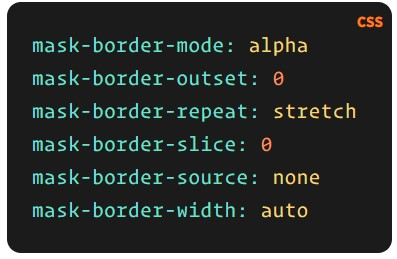

$$ -- The mask property is a shorthand to specify all mask-* properties. mask can hide part of the element is applied to and It accepts one or more comma-separated values, where each value corresponds to a mask layer.
.element {
mask: url(mask.png) right bottom / 100px repeat-y;
}
mask: mask-reference || position / bg-size || repeat-style || geometry-box || geometry-box | no-clip || compositing-operator || masking-mode
$$ -- The mask property accepts the following values, each of which is takes the value of a mask constituent property, including:
mask-mode : luminance| alpha | source-matchYou might not see mask-border in the examples we’ve seen so far, but it’s still doing something in the background because mask resets mask-border to its initial value. Remember, mask-border is a shorthand property as well, so here’s how that breaks down:
As such, the spec suggests using mask instead of the individual properties to override mask settings that pop up earlier in the cascade. That way, too, mask-border properties are properly reset to their initial values, allowing the styles declared later to work as expected.
$$ -- Both mask-clip and mask-origin take a geometry-box value. So there are a couple of things to keep in mind.
$$ -- First, if there is one geometry-box value and the no-clip keyword, then:
mask: url(mask.png) content-box no-clip;
/**
mask-origin: content-box;
mask-clip: no-clip;
*/
$$ -- If there is one geometry-box value but no no-clip keyword, then both mask-origin and mask-clip are set to the geometry-box value.
mask: url(mask.png) content-box;
/**
mask-origin: content-box;
mask-clip: content-box;
*/
content-box | padding-box | border-box | margin-box | fill-box | stroke-box | view-box
content-box | padding-box | border-box | margin-box | fill-box | stroke-box | view-box
mask: url(mask.png) content-box border-box;
/**
mask-origin: content-box;
mask-clip: border-box;
*/